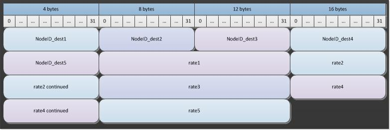

Migration file structure¶
There are four types of migration files that can be used by EMOD, namely, local migration, regional migration, air migration and sea migration. For all types, migration data is contained in a set of two files, a metadata file with header information and a binary data file. Both files are required. The structure of each of these files is nearly the same for all migration types, with the only exception being the number of columns in the binary file.
The metadata file is a JSON-formatted file that includes a metadata section and a node offsets section. The Metadata parameter contains a JSON object with parameters, some of which are strictly informational and some of which are used by Eradication.exe. However, the informational ones may still be important to understand the provenance and meaning of the data.
The following parameters in the metadata section are informational:
| Parameter | Data type | Description |
|---|---|---|
| DateCreated | string | The day the file was created. |
| Author | string | The author of the file. |
| Tool | string | The script used to create the file. |
The following parameters in the metadata section are used by Eradication.exe:
| Parameter | Data type | Description |
|---|---|---|
| IdReference | string | A unique, user-selected string that indicates the method used for generating NodeID values in the input file. For more information, see Input data file structure. |
| NodeCount | integer | The number of nodes to expect in this file. |
| DatavalueCount | integer | The number of data values per node. The number must be the same across every node in the binary file. |
In a second section, the NodeOffsets parameter contains a list of hex-encoded 16-byte values used to find the data for each given node (the NodeID).They are not 16-byte offsets, but instead, two 8-byte hex-encoded character strings. This encoding includes the source NodeID. You can map the binary data to its corresponding source NodeID by using the NodeOffset information.
The binary file contains the migration rate data in a sequential stream. In other words, it presents all the data for the first node, then all the data for the second node, all the way through to the last node. The data is laid out in rows and columns, with each row corresponding to a node and the number of columns varying based on the migration type.
The following diagram shows how migration data is laid out in rows, with each row corresponding to a source node and each column corresponding to the destination node.

Migration rate is that fraction of the node’s population that is migrating per day. Units are per person per day, meaning the number of people migrating per day divided by the total population of the node. For example, if a node had 1,000 people and a migration rate of .01, there would be .01 * 1,000 = 10 people migrating per day, but if the node had 10,000 people in the node and a migration rate of .01, it would .01 * 10,000 = 100 people migrating per day. You can adjust this rate using configuration parameters for scaling (these begin with x).
The binary file contains a stream of 4-byte unsigned integers that identify the destination node, followed by a stream of 8-byte double floating point values that contain the rate associated with the destination node (per person per day), running from 1 to the total number of nodes.
To use the migration files, you must set Migration_Model in the configuration file to a valid migration type except “NO_MIGRATION”. Each migration types also requires you to set another parameter to enable the particular type of migration selected. There are also additional parameters in the configuration file you can use to scale or otherwise modify the data included in the climate files.
Local¶
Local migration describes the foot travel movement of people into and out of adjacent nodes. A local migration file is required for simulations that support more than one node. You must also set the Enable_Local_Migration parameter in the configuration file to 1. For each location, the local migration file represents up to eight adjacent destination nodes, with 0 used as the value for unused nodes.
The following diagram shows the format for the local migration binary file data:

Regional¶
Regional migration describes migration that occurs on a road or rail network for a simulation. If a node is not part of the network, the regional migration of individuals to and from that node considers the closest road hub city. A Voronoi tiling based on road hubs is constructed of the region, with each non-hub connected to the hub of its tile. These connections are created when the migration file is constructed. They are not performed at runtime.
A regional migration file is required for simulations that cover a geography that is large enough that road/rail migration is relevant. You must also set the Enable_Regional_Migration parameter in the configuration file to 1. For each location, the regional migration file represents up to 30 adjacent destination nodes, with 0 used as the value for unused nodes.
The following diagram shows the format for the regional migration binary file data:

Air¶
Air migration describes migration that occurs by airplane travel. An air migration file is usually required for simulations of an entire country or larger geographies. You must also set the Enable_Air_Migration parameter in the configuration file to 1. For each location, the air migration file represents up to 60 adjacent destination nodes, with 0 used as the value for unused nodes.
The following diagram shows the format for the air migration binary file data:

Sea¶
Sea migration describes migration that occurs by ship travel. Unlike the other migration files, the sea migration file only contains information for the nodes that are seaports. A sea migration file does not contain every node like local, regional or air migration files do. You must also set the Enable_Sea_Migration parameter in the configuration file to 1. For each location, the sea migration file represents up to five adjacent destination nodes, with 0 used as the value for unused nodes.
The following diagram shows the format for the sea migration binary file data:
